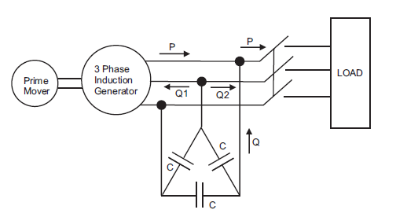
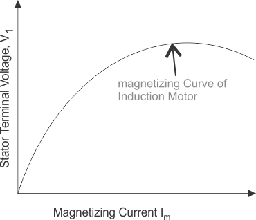
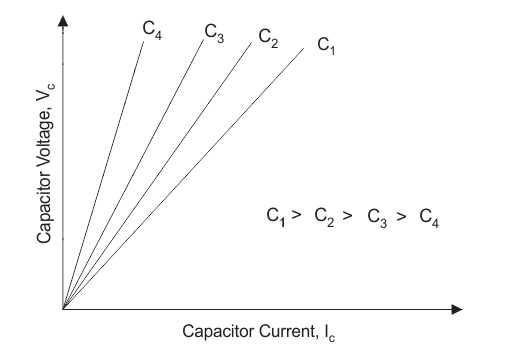
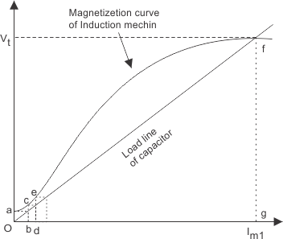

What are the conditions when the poly phase (here three phase) induction machine will behave as an induction generator? The following are conditions when the induction machine will behave as an induction generator are written below:
(a) Slip becomes negative due to this the rotor current and rotor emf attains negative value.
(b) The prime mover torque becomes opposite to electric torque.
Now let us discuss how we can achieve these conditions. Suppose that an induction machine is coupled with the prime mover whose speed can be controlled. If the speed of the prime mover is increased such that the slip becomes negative (i.e. speed of the prime mover becomes greater than the synchronous speed).Due to this, all the conditions that we have mentioned above will become fulfilled and machine will behave like an induction generator. Now if the speed of the prime mover is further increased such that it exceeds the negative maximum value of the torque produced then the generating effect of the generator vanishes. Clearly the speed of the induction generator during the whole operation is not synchronous, therefore the induction generation is also called the asynchronous generator.
Induction generator is not a self excited machine therefore in order to develop the rotating magnetic field, it requires magnetizing current and reactive power. The induction generator obtains its magnetizing current and reactive power from the various sources like the supply mains or it may be another synchronous generator. The induction generator can’t work in isolation because it continuously requires reactive power from the supply system. However we can have a self excited or isolated induction generation in one case if we will use capacitor bank for reactive power supply instead of ac supply system. So let us discuss isolated induction generator in detail,
Isolated Induction Generator
This type of generator is also known as self excited generator. Now why it is called self excited? It is because it uses capacitor bank which is connected across its stator terminals as shown in the diagram given below,

The function of the capacitor bank is to provide the lagging reactive power to the induction generator as well as load. So mathematically we can write total reactive power provided by the capacitor bank is equals to the summation of the reactive power consumed by the induction generator as well as the load. There is generation of small terminal voltage oa (as in figure given below) across the stator terminal due the residual magnetism when the rotor of the induction machine runs at the required speed. Due to this voltage oa the capacitor current ob is produced. The current bc sends current od which generates the voltage de. The cumulative process of voltage generation continues till the saturation curve of the induction generator cuts the capacitor load line at some point. This point is marked as f in the given curve.



Application of Induction Generator
Let us discuss application of induction generator: We have two types of induction generator let us discuss the application of each type generator separately: Externally excited generators are widely used for regenerative breaking of hoists driven by the three phase induction motors.
Self excited generators are used in the wind mills. Thus this type of generator helps in converting the unconventional sources of energy into electrical energy.
Now let us discuss some disadvantages of externally excited generator:
(a) The efficiency of the externally excited generator is not so good.
(b) We cannot use externally excited generator at lagging power factor which major drawback of this type of generator.
(c) The amount of reactive power used to run these types of generator required is quite large.
 by
by